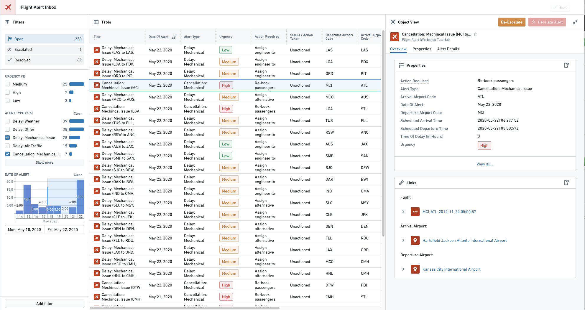

Workshop
Workshop enables application builders to create interactive and high-quality applications for operational users.

Workshop follows three key principles:
-
Object data
-
Workshop reduces the barrier to entry for application builders by using the Object layer as the primary building block. All data in a Workshop Application is read from the Object Data Layer, allowing application creators to take advantage of rich characteristics such as links between object types. Workshop leverages Actions for writeback to object data, Functions for business logic on object data, and Derived properties for runtime-calculated values based on linked objects and aggregations.
- Consistent design
- All Workshop components follow a unified design system and are built to interact cleanly, have a consistent look and feel, and provide a high-quality end-user experience.
- Interactivity and complexity
- Applications built in Workshop are more dynamic and interactive than typical dashboards created in other point-and-click tools. By leveraging high-quality Layouts and an easy-to-use but sophisticated Events system, Workshop applications aim to be as user-friendly and high-quality as custom React applications.
Workshop is a flexible application builder that supports a wide range of possible use cases. Some common application patterns supported by Workshop include:
- Inbox Alert and Task Management
- Inboxes are commonly used to enable operational users to triage, prioritize and complete tasks. For instance, you might use a Workshop application to categorize new incoming warranty claims, or to triage and investigate alerts.
- Common Operational Pictures (COPs)
- A common operational picture (COP) is a display of relevant operational information shared across multiple organizations to facilitate awareness and collaboration. For example, you might build a Workshop application to serve as an âon-the-wallâ, big-screen view of the current situation, containing a map, relevant statistics and charts, ways to filter or drill down on data, and connections to other views or workflows.
Cross-application interactivity
Workshop supports data sharing across applications. Use drag and drop and the App Pairing widget to integrate your Workshop module with other Palantir applications. Use Commands to execute actions and operations across applications.
Learn more about cross-application interactivity.
:::callout{theme="success" title="Palantir Learning portal"}
Try our "Deep dive: Building your first application" course on learn.palantir.com â.
:::